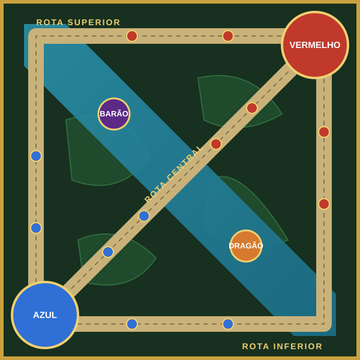

Ilustração esquemática feita para este projeto.
Estrutura do mapa
- Três rotas principais
- Selva com monstros
- Objetivos estratégicos
Rotas
Superior, central e inferior, protegidas por torres de cada time.
Selva
Área entre as rotas com monstros que dão ouro e bônus.
Barão e Dragão
Objetivos neutros que dão vantagem à equipe que os derrota.